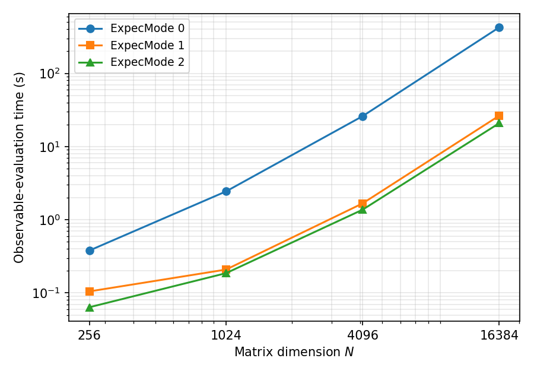

6.7. 並列全対角化¶
本節では、全対角化 (method="FullDiag") の並列計算で用いられる
アルゴリズムの詳細と、バックエンド間の速度比較を示します。
入力キーワード (Solver, ExpecMode, NGPU) の仕様は
CalcModファイル を参照してください。
6.7.1. 計算の流れ¶
全対角化は次の4段階で構成されます。
ハミルトニアン行列の生成: 実空間配置を基底として \(H_{ij} = \langle \psi_i | \hat{H} | \psi_j \rangle\) (\(N \times N\) のエルミート行列) を生成します。
対角化:
Solverキーワードで選択したバックエンド (LAPACK / ScaLAPACK / MAGMA / ELPA) で全固有値・全固有ベクトルを 求めます。固有ベクトルの再分散 (
Solver 1/3の分散実行でExpecMode 1/2を使用する場合): 対角化に適した分散形式から 物理量評価に適した分散形式へ固有ベクトルを再配置します。物理量の評価と出力: 各固有状態 \(|\Phi_i\rangle\) について エネルギー、揺らぎ、Green関数などの期待値 \(\langle \Phi_i | \hat{A} | \Phi_i \rangle\) を計算し出力します。 評価カーネルは
ExpecModeで選択します。
6.7.2. 分散ハミルトニアン生成 (Solver 3)¶
Solver 0/1/2 では全ランクが \(N \times N\) 行列全体を
複製して保持するため、1プロセスあたりのメモリは \(O(N^2)\) です。
Solver 3 (ELPA) を複数MPIプロセスで実行した場合は、各ランクが
自分の担当する連続な列ブロック (パネル) のみを生成・保持します。
1ランクあたりのピークメモリは \(O(N^2/P)\) (\(P\): プロセス数)
となり、プロセス数を増やすことでより大きな次元を扱えます。
実測では 8サイトHubbard鎖 (\(N=4900\)) で、複製形式 (1プロセス)
の 1.93 GB に対し4プロセス分散では 0.63 GB/ランクでした。
生成されたパネルは、ELPA (およびScaLAPACK記述子) が要求する2次元 ブロックサイクリック分散へMPI通信により再配置されます。プロセス グリッドは \(P\) からなるべく正方に近い \(n_{\rm prow} \times n_{\rm pcol}\) を選びます。行列次元 \(N\) がグリッド次元 \(\max(n_{\rm prow}, n_{\rm pcol})\) より小さい場合は、ELPA 対角化の前にランク数を減らすよう促すエラーで停止します。
6.7.3. ELPA による対角化¶
ELPA (Eigenvalue soLvers for Petaflop Applications) は密行列固有値
問題のための並列ライブラリで、ScaLAPACKと同じ2次元ブロック
サイクリック分散を用いつつ、より高い並列効率を実現します。
\({\mathcal H}\Phi\) は複素エルミート行列ソルバーを使用します。
1-stage/2-stage アルゴリズムは \({\mathcal H}\Phi\) 側で選択
します: GPU 実行では常に 1-stage を、CPU 実行ではブロックサイズが
既定値まで取れる場合に 2-stage、プロセスグリッドに対して行列が
小さくブロックサイズが制限される場合は 1-stage を使用します。
NGPU \(\geq 1\) を指定すると GPU 版が有効になり、プロセス
とGPUの対応はELPAが自動割当します (1プロセス1GPUの起動構成を推奨、
ELPA 2023.11.001 以降が必要)。NGPU は有効化フラグであり使用
デバイスを物理的に制限しないため、割当の制御はスケジューラや
CUDA_VISIBLE_DEVICES で行ってください。
6.7.4. 状態タスク並列の物理量評価 (ExpecMode 1)¶
従来の評価方法 (ExpecMode 0) では、固有状態を1つずつ全ランクで
共有しながら評価するため、状態ごとにMPI集団通信 (固有ベクトルの
収集・縮約) が発生します。状態数は \(N\) に等しいため、特に
マルチノード実行ではこの通信が支配的になります。
ExpecMode 1 では、対角化後に固有ベクトルを「状態パネル」形式
(各ランクが連続な固有状態ブロックを所有) へ再分散し、各ランクが
自分の担当状態を 通信なしで独立に 評価します。物理量
(zvo_phys*.dat) はランクごとの部分結果を最後に1回だけ収集
します。集約Green関数出力 (OutputGreenFormat 1) はランクごとの
パーシャルファイルに書き出し、全ランクのマニフェストが成功を報告
した時点でランク0が一時ファイルへのマージとリネームによる
トランザクショナルな公開を行います (途中失敗時に不完全な最終
ファイルが公開されるのを避ける設計です)。
6.7.5. トレースカーネル評価 (ExpecMode 2)¶
ExpecMode 1 でも、一体・二体Green関数の評価は「状態ごとに演算子
を作用させる」ループであり、演算子あたりの基底走査オーバーヘッドを
状態数 \(N\) 回支払います。ExpecMode 2 は、各演算子
\(\hat{A}\) について基底状態の写像 (作用先の状態インデックス
\(k \to k'\) と振幅) を 1回だけ 前計算し、所有する全固有状態
をその写像に対する密なストリーミングループで評価します。これにより
演算子あたりのオーバーヘッドが状態数に対して償却され、一体・二体
Green関数を多数の固有状態について評価する場合に有効です。
これら2つのGreen関数カーネルの対応モデルは Hubbard/HubbardGC
およびスピン1/2の Spin/SpinGC です。未対応モデルや実行時条件
(N体Green関数との評価器共有、演算子未定義、結果バッファ上限
HPHI_TRACE_BUF_MAX_MB 超過) に該当する物理量は自動的に
ExpecMode 1 の経路へフォールバックし、その判定は物理量評価の
直前に INFO 行で報告されます。
本バージョンより、ExpecMode 2 はエネルギー・ゆらぎ系 (var 列
を含む) についても、別のCSR (圧縮行格納) カーネルでトレースします:
ハミルトニアンを1ランクあたり1回だけコンパクトな疎行列へ前計算し、
所有する全固有状態を、通常の mltply 型の走査の代わりに疎行列
ベクトル積でストリーミング評価します。上記のGreen関数カーネルとは
異なり、エネルギー系は上記の対応4行に限定されず、
Hubbard/HubbardGC (粒子数保存の HubbardNConserved を含む)、
tJ/tJGC (tJNConserved を含む)、
Kondo/KondoGC (KondoNConserved を含む)、
および一般スピンを含む Spin/SpinGC に対応しています。ただし
SpinlessFermion/SpinlessFermionGC および未知のモデルには
対応しておらず、これらは ExpecMode 1 へフォールバックします。
エネルギー系のフォールバックの理由は全体で3つあり、この順序で判定
されます: ハミルトニアンが InputHam から読み込まれた場合、モデルが
未対応の場合、または1ランクあたりのCSRバッファが
HPHI_TRACE_BUF_MAX_MB (Green関数の結果バッファと共通の上限) を
超える場合です。「モデルが未対応」という理由は、まさにモデルを上記の
対応集合から除外するものなので、モデルが対応している場合には
InputHam とメモリ上限の2つの理由のみが該当し得ます。S2、
NBodyG、AnomalousG は本バージョンでも ExpecMode 1 の
経路のままです。詳細なフォールバック分類と正確な INFO の文言は
CalcModファイル の ExpecMode の項を参照してください。
なぜCSRハミルトニアンを各ランクに複製するのか。 状態パネル形式
では、各ランクが 完全な 固有ベクトルのブロックを所有し、状態ごと
のループ内で通信せずに評価します (これが ExpecMode 1/2 の
核心です)。ローカルに完結した \(x\) について
\(y = H x\) を計算するには、そのランクに \(H\) の全行が必要
なので、CSRは各ランクで全列範囲について構築されます。CSRを分散
(各ランクが \(N/P\) 行、非ゼロで約 \(\mathrm{nnz}/P\) 個のみ
を保持) すると、分散した
演算子をローカルの完全ベクトルに作用させるために状態ごとの通信が
発生し、状態パネル設計が除去したはずの集団通信コストが復活して
しまいます。したがって1ランクあたりのCSRは \(P\) を増やしても
小さくなり ません。とはいえCSRはコンパクトです: 疎行列であり、
発行される要素数 \(\mathrm{nnz} \approx T \cdot N\)
(\(T\) は1列あたりに寄与するハミルトニアン項の数) で、固定
モデルでは \(N\) にほぼ比例します (\(T\) 自体も系のサイズに
対してゆるやかにしか増えません。例: Hubbard鎖 \(L=10\) で
\(T \approx 21\)、\(L\) サイト横磁場スピン鎖で
\(T \approx L+1\))。バッファ容量とメモリゲートはこの発行要素数
に合わせて確保・判定されます (重複を合算した後の要素数
\(\mathrm{rowptr}[N]\) はこれより小さくなり得ます)。支配的な
colidx/val の格納は \(\approx 24 \times \mathrm{nnz}\)
バイト
(加えて \(O(N)\) の行ポインタ・作業ベクトル・対角係数配列) で、
\(N = 63504\) で約 32 MB です。中程度のランク数では、これは
\(O(N^2/P)\) の固有ベクトル状態パネルよりずっと小さいですが、
CSRは \(P\) に依存しない一方でパネルは \(P\) で小さくなる
ため、\(P\) を増やすにつれてCSRの固定コストの相対的な比重が
大きくなり、\(P\) が十分大きい場合 (あるいは演算子密な入力では
中程度の \(P\) でも) 支配的になり得ます。予測されるCSRサイズが
1ランクあたりの HPHI_TRACE_BUF_MAX_MB ゲートを超える場合は、
エネルギー系が ExpecMode 1 へフォールバックし、それを報告します。
6.7.6. 速度比較¶
シングルノード¶
横磁場付きスピン1/2鎖 (model="SpinGC", lattice="chain",
\(J=1\), \(\Gamma=0.5\), \(L=8,10,12,14\), 次元
\(N=2^L=256,\dots,16384\)) を、物性研スパコン kugui (AMD EPYC
7763、Intel コンパイラ + Intel MPI + MKL) の1ノードで測定しました。
CPU 構成は全て合計16コアに揃えています: Solver 0 は1プロセス
\(\times\) 16スレッド、Solver 1/3 は16プロセス
\(\times\) 1スレッドです。GPU は同システムの GPU ノード
(EPYC 7763 + NVIDIA A100-SXM4-40GB \(\times\) 2/ノード) で測定し、
1プロセス1GPU構成を使用します: 1枚=1プロセス (NGPU 1)、
2枚=1ノード2プロセス (NGPU 2)、4枚=2ノード \(\times\)
2プロセス (NGPU 2、ノード間は InfiniBand + Intel MPI)。
対角化時間 (CalcTimer.dat の LapackDiag 区分、秒):
\(N\) |
Solver 0 (LAPACK) |
Solver 1 (ScaLAPACK) |
Solver 3 (ELPA, CPU) |
Solver 3 (GPU \(\times\) 1) |
Solver 3 (GPU \(\times\) 2) |
Solver 3 (GPU \(\times\) 4, 2ノード) |
|---|---|---|---|---|---|---|
256 |
0.82 |
0.19 |
0.20 |
3.42 |
1.69 |
3.55 |
1024 |
0.94 |
0.33 |
0.21 |
1.40 |
1.51 |
2.02 |
4096 |
42.22 |
7.60 |
3.72 |
3.41 |
3.11 |
2.54 |
16384 |
1929.6 |
536.9 |
172.6 |
48.23 |
35.51 |
18.97 |

図 6.1 対角化時間の行列サイズ \(N\) 依存性 (両対数)。¶
\(N=16384\) では Solver 3 (ELPA CPU、16プロセス) は
Solver 0 (LAPACK) の約11倍、Solver 1 (ScaLAPACK) の約3.1倍
高速です。GPU は \(N\) が小さい間は初期化・転送のオーバー
ヘッドで不利ですが、\(N \sim 4000\) で CPU 16コアと並び、
\(N=16384\) では GPU 1枚で ELPA CPU の約3.6倍 (LAPACK の
約40倍)、2枚で約4.9倍 (同約54倍)、2ノード4枚では約9.1倍
(同約102倍) に達します。2枚 \(\to\) 4枚 (ノード間) の
スケーリングは約1.87倍とほぼ理想的です。一方 \(N \lesssim
4000\) では GPU を増やしても改善せず、GPU 枚数は行列サイズに
見合った分だけ増やすのが得策です。
物理量評価時間 (Solver 3 CPU 16プロセス、全状態の一体・二体
Green関数を集約形式で出力、CalcTimer.dat の CalcPhys 区分、秒):
\(N\) |
ExpecMode 0 |
ExpecMode 1 |
ExpecMode 2 |
|---|---|---|---|
256 |
0.38 |
0.11 |
0.06 |
1024 |
2.44 |
0.21 |
0.19 |
4096 |
26.00 |
1.67 |
1.37 |
16384 |
424.5 |
26.40 |
20.84 |
{kind=link}

図 6.2 物理量評価時間の行列サイズ \(N\) 依存性 (両対数)。¶
\(N=16384\) では ExpecMode 1 は ExpecMode 0 の約16倍
(プロセス数どおりのスケーリング)、ExpecMode 2 はトレース
カーネルによりさらに約1.3倍高速です。
マルチノード¶
8サイトHubbard鎖 (\(N=4900\))、全状態の一体・二体Green関数出力
付き、Solver 3 (CPU)、kugui の2ノード \(\times\) 4プロセス
(AMD EPYC 7763、InfiniBand接続、Intel MPI) での全体実行時間:
ExpecMode |
実行時間 (2ノード8プロセス) |
|---|---|
0 (従来) |
11分52秒 |
1 (状態タスク並列) |
52秒 |
2 (トレースカーネル) |
49秒 |
ExpecMode 0 の実行時間は状態ごとのノード間集団通信 (固有
ベクトル収集と縮約 \(\times N\) 状態) に支配されており、
ExpecMode 1/2 はまさにこのコストを除去します (約14倍)。
マルチノード実行では ExpecMode 1 以上の使用を強く推奨します。
必要メモリの目安¶
複素倍精度の \(N \times N\) 行列1個は \(16 N^2\) バイト です。ピーク時の必要メモリはソルバーごとに次が目安です (係数は kugui での実測 MaxRSS に基づく経験値で、MPI ランタイム等の固定 オーバーヘッドは含みません):
Solver 0/2: 行列と固有ベクトルを各プロセスが複製保持 するため、1プロセスあたり 約 \(32 N^2\) バイト。Solver 1: 対角化は分散ですが、行列の生成は複製方式のため 1プロセスあたり 約 \(16 N^2 + 32 N^2 / P\) バイト (\(P\): プロセス数)。生成の複製分が支配的で、大きな \(N\) ではSolver 3より多くのメモリを要します。Solver 3(CPU): 生成も分散のため ジョブ全体で 約 \(64 N^2\) バイト (行列コピー約4個分、1プロセスあたり \(64 N^2 / P\))。Solver 3(GPU): 上記のホストメモリに加えて 1 GPU あたり 約 \(40 N^2 / P\) バイトのデバイスメモリ (complex の行列+ 固有ベクトル+三重対角段の実数ワークスペース)。
\(N\) |
Solver 0 (1プロセス) |
Solver 3 CPU (ジョブ全体) |
Solver 3 GPU (1GPUあたり, \(P=4\)) |
|---|---|---|---|
16,384 |
8.6 GB |
17 GB |
2.7 GB |
63,504 |
129 GB |
258 GB |
40 GB (A100 40GB の限界) |
200,000 |
1.3 TB |
2.6 TB |
400 GB (\(P=4\) では不可) |
最大サイズの目安¶
到達可能な行列次元 \(N\) は主にメモリで決まります (kugui での 実測に基づく目安):
CPU (Solver 3): ピーク時にジョブ全体で約 \(64 N^2\) バイト (行列コピー約4個分) を要します。実測では \(N=63504\) (10サイトHubbard鎖) が4ノード (128プロセス) で対角化23分・ 約67 GB/ノードで完了しました (16ランク基準の並列効率 ~91%)。 この模型から外挿すると、16ノード (約3.8 TB) で \(N \sim 2 \times 10^5\) 程度 (対角化 ~3時間) が実用上限です。
GPU (Solver 3): 行列・固有ベクトルはデバイスメモリにも分散 されます。ELPA (2025.06) の complex 1-stage 経路では 1 GPU あたり 約 \(40 N^2 / P\) バイト (complex の行列+固有ベクトルに加え、 三重対角段の実数ワークスペース) がピークです。A100 40GB \(\times 4\) では \(N=48620\) は動作 (対角化 199秒)、 \(N=63504\) はデバイスメモリ超過で停止しました (このモデル の境界予測 \(N \approx 6.2 \times 10^4\) と整合)。上限は GPU 枚数 \(P\) とともに \(\sqrt{P}\) で伸びます。 利用できる GPU 数を超える次元は CPU ノードを使用してください。
使い分けの指針¶
1プロセスで収まる小規模系では
Solver 0(LAPACK) が最も手軽です。数千次元以上・複数プロセスでは
Solver 3(ELPA) が対角化速度と メモリ (分散ハミルトニアン生成による \(O(N^2/P)\)) の両面で 有利です。GPUが利用可能であればNGPUの指定でさらに加速 できます。なおExpecMode 1/2による物理量評価の高速化は 分散実行のSolver 1でも利用できます。物理量評価は、対応モデルであれば
ExpecMode 2、それ以外はExpecMode 1を推奨します (結果はExpecMode 0と一致します)。 \(O(N^2/P)\) のメモリ削減のためにプロセス数を増やす場合、ExpecMode 2のエネルギー系CSRハミルトニアンは各ランクに複製 され \(P\) では小さくならない点に注意してください (上記の複製に 関する説明を参照)。通常の格子模型では小さいですが、1ランクあたりの メモリの下限を与えるため、\(P\) が大きい場合や演算子密な入力 では効いてきます。